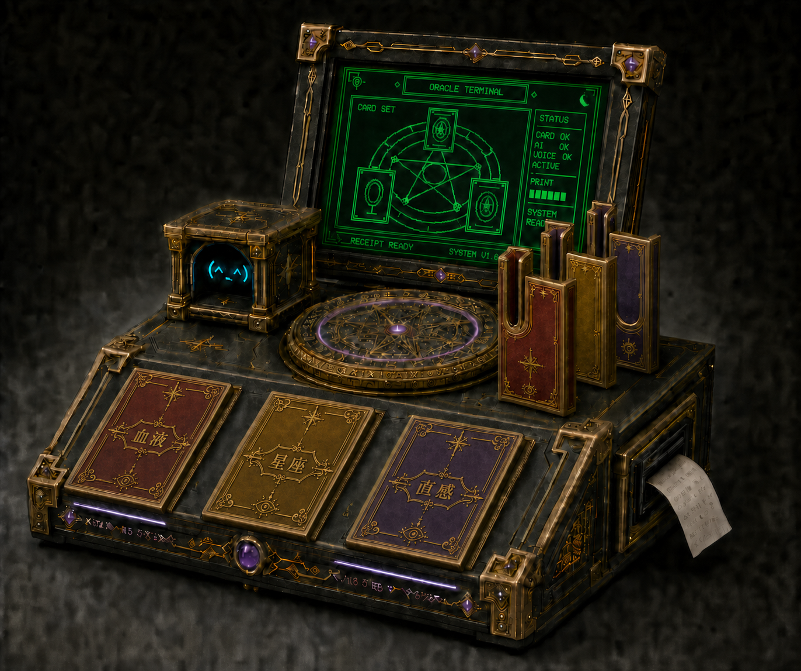

01 / ABOUT
レトロ魔導占い機に、
AIを封じ込めました。
神託エライチャンは、星座・血液型・直感の3枚のカードを読み取り、その組み合わせからAIが「今週の運勢」を作る体験型ガジェットです。
緑に光るレトロ画面、しゃべる小さな占い師、回転する魔法陣。最後には、あなただけの神託が感熱紙で印刷されます。
02 / HOW TO ORACLE
カードを3枚えらぶだけ。
- 01星座
あなたの星座カードを選びます。
- 02血液型
血液型カードを選びます。
- 03直感
気になる絵柄を直感で選びます。
- 04神託
画面と音声、感熱紙で結果が届きます。
03 / INSIDE THE MACHINE
魔術に見えて、
中身は全部ガジェット。
- RFID3種類のカードを個別に読み取り
- AIカードの組み合わせから運勢を生成
- VOICE日本語音声と画面内アバター
- PRINT持ち帰れる感熱紙の神託
- PHYSICAL FXLED・回転機構・音による演出
04 / EXHIBITION
3DPの集いin大阪 2026
出展決定。
- DATE
- 2026年11月1日（日）
- OPEN
- 13:00–18:00
- VENUE
- 大阪市中央公会堂 3階・中会議室
- ADDRESS
- 大阪市北区中之島1丁目1番27号
- STYLE
- 展示のみ／神託体験は無料
STATUS: EXHIBITOR CONFIRMED
05 / CONTACT